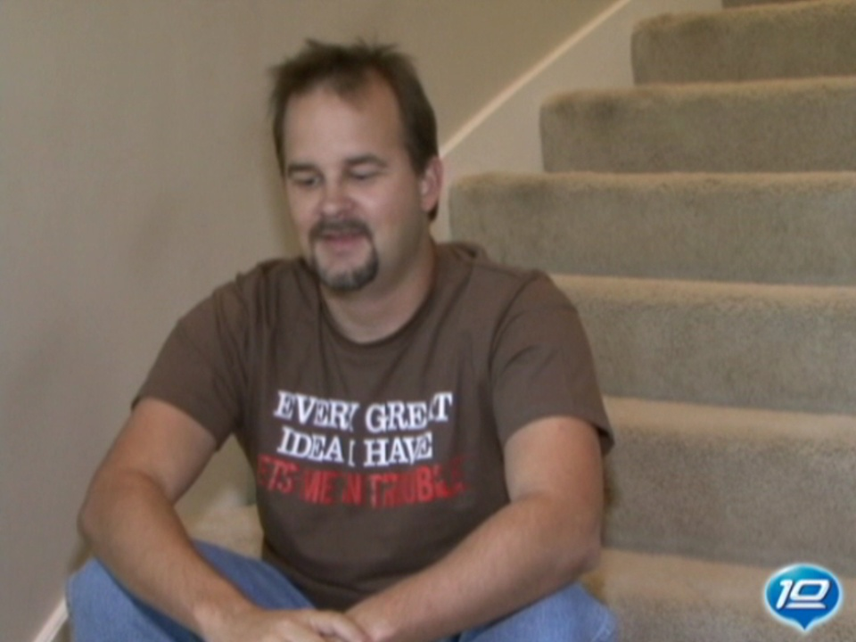
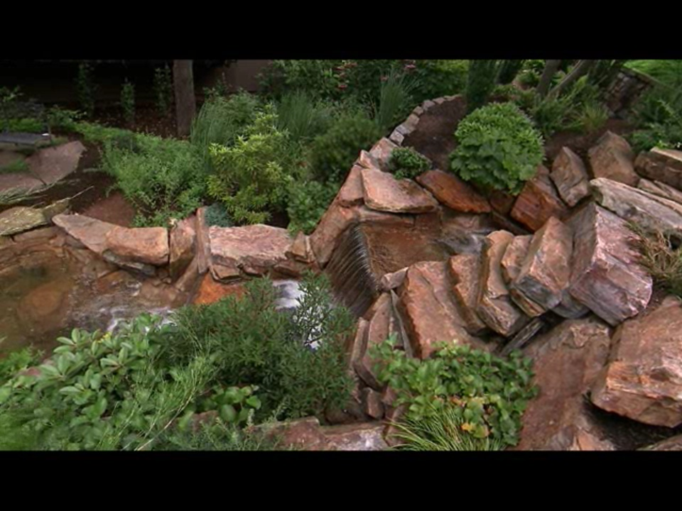
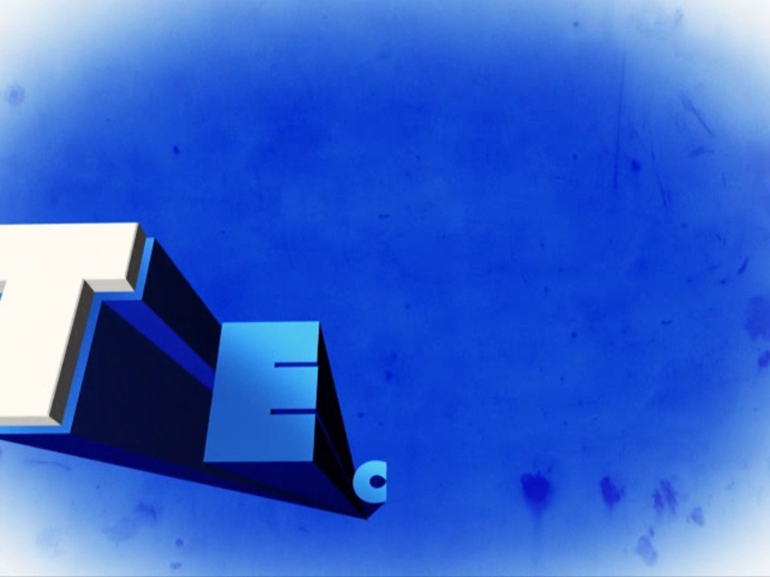
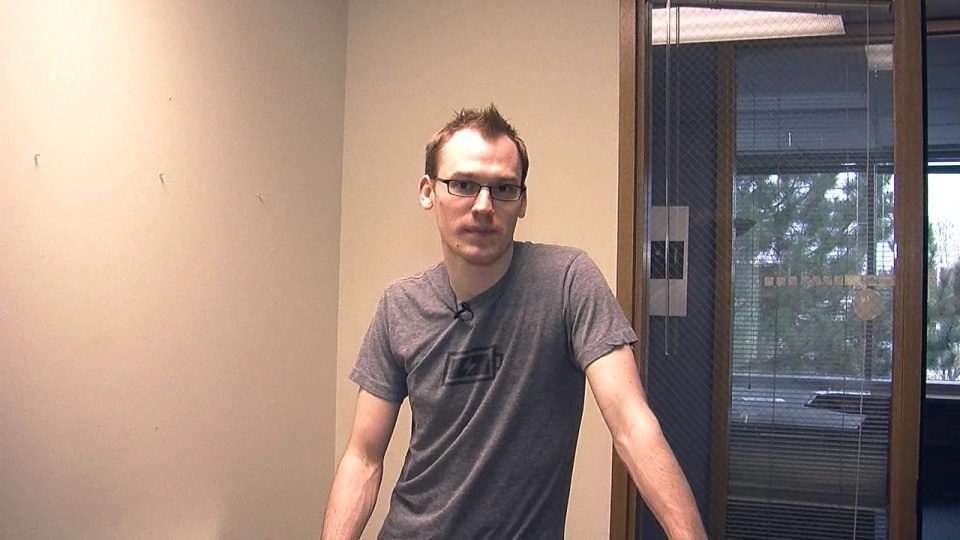
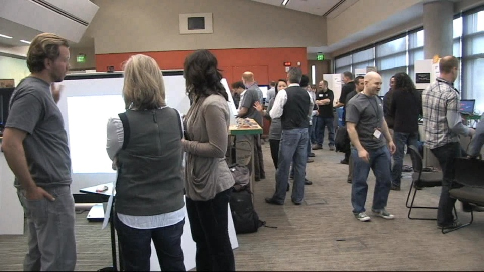
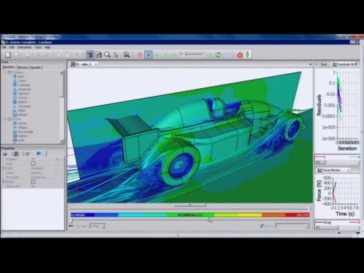

Microsoft employees show us the projects, houses, and hobbies that they are passionate about.
Show Us Your Tech: Sandquist Edition[WMV] [2007/11/01]Jeff Sandquist is leading us in a new feature that looks at the technology that power users have at home. This isn't about who has the most gadgets, it's about what electronics make your life easier a…
Bob Muglia: Shows us His Tech[WMV] [2008/09/03] Bob Muglia is Senior Vice President of the Server and Tools Business (STB) at Microsoft. He joined Microsoft in 1988 and has been a leader in shaping the company’s business and technology strategy. …
Show Us Your Tech: Dan Penn Edition[WMV] [2009/01/01] Dan Penn is serious about his Christmas lights, each year he sets up thousands of lights synchronized to music broadcast over FM at his house. This year it is bigger than ever with over 16,000 lights…
Show Us Your Tech - Mark Pendergrast Edition[WMV] [2009/12/01] If there's any geek in you at all, you've probably put together a combination of technology that fits your lifestyle and personality, whether it's a modest MP3 player and speaker dock, or an executiv…
Show Us Your Tech: Juan Goni Edition[WMV] [2010/01/27] Juan Goni is a Senior Program Manager at Microsoft in the Exchange Online Deployment group and invited us over to take a look at his home setup. Juan has some of the same challenges many of us do, fo…
Show Us Your Tech: 'Softie Builds 737 Cockpit In His House[WMV] [2011/04/27] Microsoft employees are often as passionate about their hobbies as they are with their work. Salvador Patuel is an ADM out of our UK office during the day, but he's a hobbiest commercial airline pilo…
Show Us Your Tech: Inside the Jellybean[WMV] [2011/04/30] If you watched the Mix 11 keynote, you probably saw Coding4Fun's mad scientist Clint Rutkas driving around in his Kinect-powered, gestured-controlled recliner. In this Show Us Your Tech I talked to C…
2011 Garage Science Fair[WMV] [2011/05/09] Last week I got a chance to attend The Garage Science Fair at the 2011 Hardware Summit. The Garage at Microsoft is a place for employees to collaborate on interesting side-projects and share knowledg…
Bill Buxton Shows Us His Favorite Tech[WMV] [2011/05/12] This year at CHI 2011, Bill Buxton was invited to display his personal collection of gadgets. These include a wide variety of things, from toys like the Skedoodle and the Power Glove to Chord Keyboar…
Show Us Your Tech: 'Softie Builds Nuke Reactor in Garage[WMV] [2011/05/27] Carl Greninger works in Microsoft IT Operations as a PM. Carl is also the closest I've met to a real life "Doc Brown". He even has his own version of a Mr. Fusion, except his really works. …
Show Us Your Tech: Burning Man Sub[WMV] [2011/08/17] Daniel Robbins, Melissa Quintanilha, and Kevin Decker are three Microsoft employees who are building a submarine conning tower that they will drive across country to the Burning Man festival in the B…
High Performance Computing with Wenming Ye[WMV] [2011/11/18]If there were a special geek merit badge for those whose desktop PC has the word "CRAY" across the front, Wenming Ye would have plenty of them. Wenming works just down the hallway from us on…